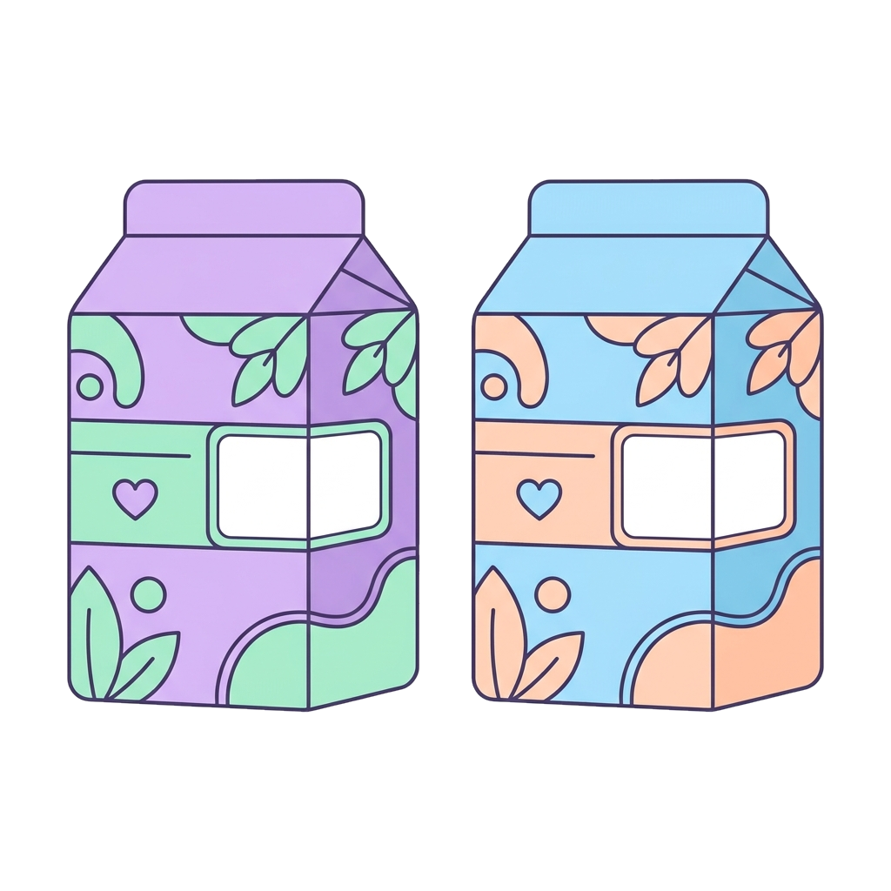

3 · Nomenclatura
Classificazione dei medicinali
Riferimento
Prodotto innovativo registrato presso l'AIFA. È il primo sul mercato, con efficacia, sicurezza e qualità comprovate scientificamente: serve da riferimento per tutti gli altri. Ha un marchio e un nome commerciale.
Generico
Medicinale intercambiabile con quello di riferimento, prodotto dopo la scadenza del brevetto. Non ha un marchio proprio — usa il nome del principio attivo — e ha un costo ridotto.

Simile (equivalente)
Contiene lo stesso principio attivo e le stesse caratteristiche del riferimento (concentrazione, forma e posologia), ma si differenzia perché è identificato da un nome commerciale proprio.
Riferimentoprodotto di marca · nome commerciale
Genericonome del principio attivo · confezione con la «G»
Equivalenteprodotto di marca · nome commerciale proprio
Perché costa meno
Il generico non deve ripetere tutta la ricerca clinica del riferimento: deve solo dimostrare di essere bioequivalente, e questo ne abbassa il prezzo.
12